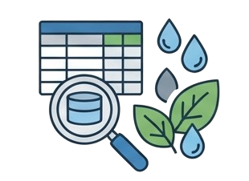
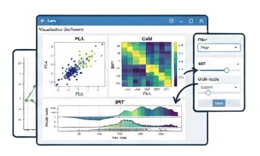
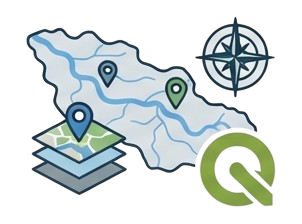
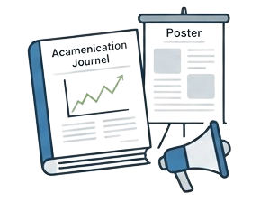

Accompagner les acteurs de la recherche, les bureaux d'études et les gestionnaires dans l'analyse, l'interprétation et la valorisation des données environnementales.
Chaque prestation est adaptée aux objectifs scientifiques ou opérationnels du projet.





Développement de méthodes et d’outils pour la visualisation de données complexes et la production d’indicateurs écologiques, en appui à la recherche, à la gestion environnementale et à la prise de décisions.
Les approches développées dans le domaine des écosystèmes aquatiques peuvent être adaptées à de nombreux contextes environnementaux.
Applicable à divers écosystèmes:
les sols, l’atmosphère ou les milieux urbains
Modélisation statistique, visualisation de jeux de données multidimensionnels
Conception d’outils interactifs
Aborder des problématiques environnementales avec un méthodologie commune
Intégrer des données hétérogènes pour mieux comprendre les dynamiques des systèmes
L’objectif est de mettre ces compétences au service de projets interdisciplinaires,
afin de contribuer à une compréhension globale des enjeux environnementaux.